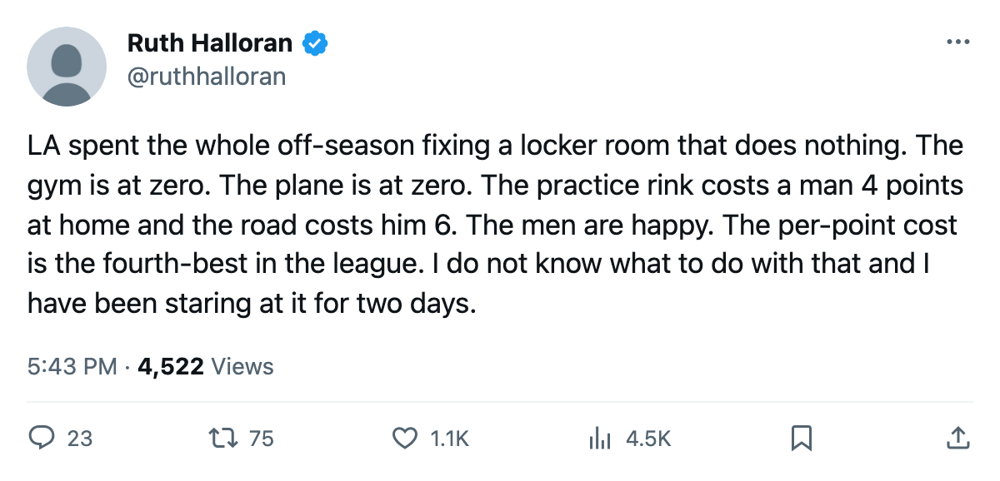
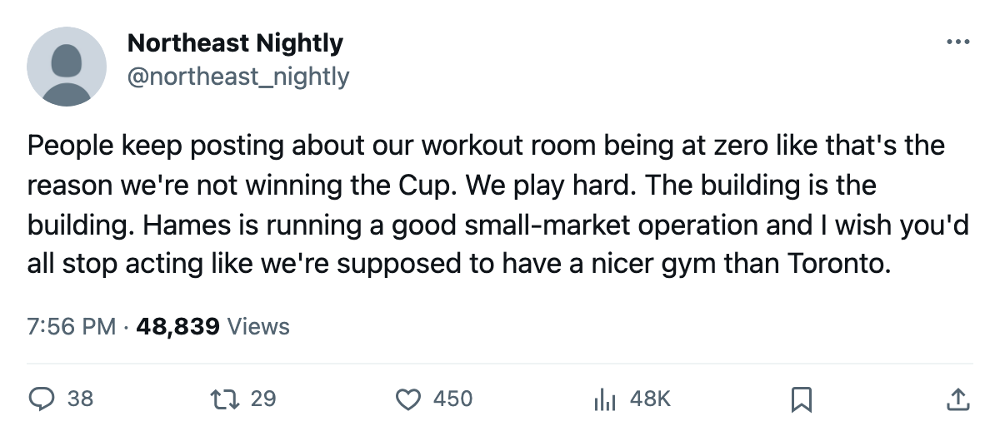

Minus Nineteen: Los Angeles runs the worst rooms in the league and its men do not care
Every live track sits at its floor, and the one room LA raised last season reads nothing
 Ruth HalloranBusiness of hockey · The Building
Ruth HalloranBusiness of hockey · The Building
The piece
Los Angeles runs the worst rooms in this league. Every live track on its facility file sits at its floor, and the four tracks that actually move a rating total minus 19, the lowest number on the sheet. The next worst is  Mighty Ducks of Anaheim at minus 18.
Mighty Ducks of Anaheim at minus 18.
At home, LA's practice rink at level 1 costs 4 points on every attribute. On the road, a travel room at level 0 costs 6. The workout rink at level 0 costs 5 on strength, checking and endurance. The equipment room at level 1 costs 4 more on the skating attributes.  Los Angeles Kings pays that penalty every night. Averaged over its own roster, the facilities model puts the penalty at -2.61 per man, 22nd in a 30-club league.
Los Angeles Kings pays that penalty every night. Averaged over its own roster, the facilities model puts the penalty at -2.61 per man, 22nd in a 30-club league.
The league files no news for an upgrade. The changes are visible only as a difference between two saves, and the record has held since December 2004. LA's only entry is a locker room raise in late May, from level 3 to level 4. That is par on the tuning file, the only room on LA's sheet that reads zero. It is also one of two rooms whose curve nothing in this pipeline reads.
The men do not mind
Marc Lamothe67 and his teammates carry a club morale average of 98.4, the third-highest in the league.  Toronto Maple Leafs has the best rooms at minus 2, and the lowest club morale at 89.7. Rooms that move a rating say nothing about how a man feels, and the track that supposedly moves morale does nothing in this build.
Toronto Maple Leafs has the best rooms at minus 2, and the lowest club morale at 89.7. Rooms that move a rating say nothing about how a man feels, and the track that supposedly moves morale does nothing in this build.
Seven clubs, no live upgrades
Since the record opened in December, 7 of 30 clubs have never raised one of the four tracks that move a rating. They put money into rooms that do nothing, or into nothing at all.
| Club | Live sum | Morale | Per point | Dead-track upgrades made |
|---|---|---|---|---|
| Los Angeles Kings | -19 | 98.4 | $10.16M | locker room (May) |
| Mighty Ducks of Anaheim | -18 | 92.2 | $13.41M | none |
 Chicago Blackhawks Chicago Blackhawks | -17 | 93.2 | $16.25M | locker room (Jan), scouting (May) |
 Atlanta Thrashers Atlanta Thrashers | -16 | 90.3 | $19.27M | scouting (Dec), scouting (May) |
 Phoenix Coyotes Phoenix Coyotes | -16 | 93.6 | n/a | scouting (May), locker room (May) |
 Colorado Avalanche Colorado Avalanche | -14 | 97.7 | $34.05M | scouting (May), locker room (May) |
 San Jose Sharks San Jose Sharks | -11 | 92.2 | $22.08M | none |
San Jose sits at minus 11, the best of the seven, because its equipment room is at level 5, the only one above par anywhere in the league. It has made zero upgrades of any kind since the record opened. Anaheim sits at minus 18 with the same blank record: no upgrades, live or dead.
What a point costs at the floor
LA's payroll of $50.80M is the 25th-highest in this league. Its per-point cost of $10.16M is the fourth-best. Hames McKenna is running a cheap roster through the worst rooms in the league and producing points. The club cleared $19.12M in profit on revenue of $28.55M, sold an average of 14,493 seats at $80 a seat, and sits 26th on the league's prestige table at 557.
Twenty-three clubs raised at least one live track between December and the spring. Most did it in a single late-May wave. Toronto raised travel twice and workout three times, five live upgrades, more than any other club. Pittsburgh raised equipment once. Tampa Bay raised practice and equipment on the same May date it also raised two scouting levels and a locker room.
LA has not touched a live track at all. McKenna's roster runs at its floor in every room that counts, and the men play happy, and the per-point cost sits fourth in the league. The road penalty is 6 points on every attribute, and how much that costs over a full schedule of travel is something the minus 19 does not resolve.

